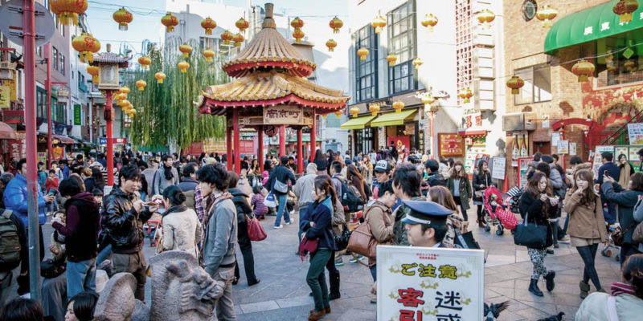
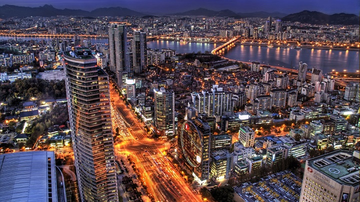
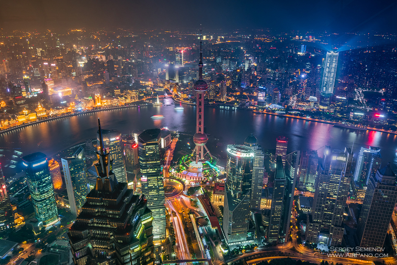
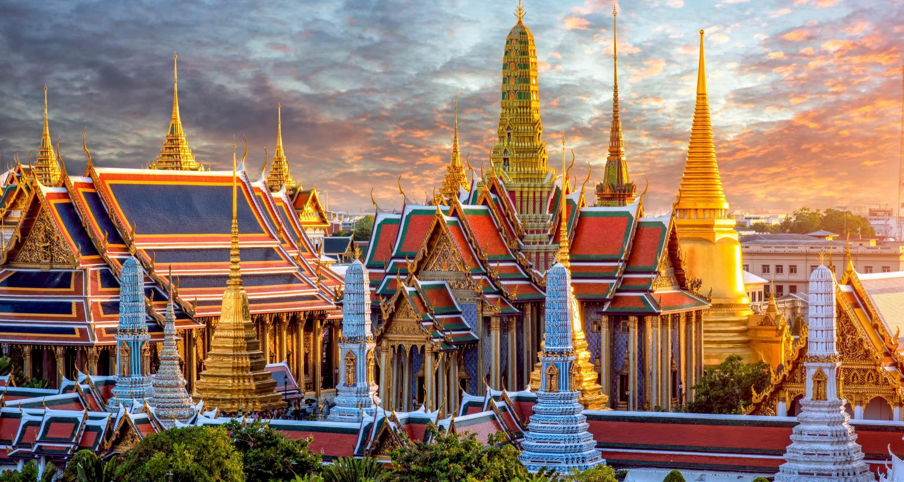

Sobre nosotros
Ofrecemos experiencias únicas y seguras para descubrir Asia. Cada tour está diseñado para que vivas lo mejor de cada destino, desde la cultura hasta la gastronomía.
Japón

Sumérgete en la perfecta combinación entre tradición y modernidad. Conoce Tokio, Kioto y disfruta de la belleza del Monte Fuji.
- Duración: 10 días
- Incluye: vuelos, alojamiento y guías turísticos
- Actividades: templos, gastronomía, parques tecnológicos
Singapur

Explora este país futurista que mezcla culturas de todo el mundo. Visita Marina Bay Sands y los Gardens by the Bay.
- Duración: 5 días
- Incluye: transporte, hospedaje y recorridos culturales
- Actividades: compras, arquitectura, gastronomía
Corea
Desde Seúl hasta Busan, descubre un país lleno de historia, tecnología y entretenimiento.
- Duración: 8 días
- Incluye: vuelos, alojamiento y visitas guiadas
- Actividades: palacios, mercados, experiencias culturales
China
Camina sobre la Gran Muralla, conoce la Ciudad Prohibida y explora la modernidad de Shanghái.
- Duración: 12 días
- Incluye: transporte, hotel y excursiones
- Actividades: patrimonio histórico, cultura local, arquitectura
Tailandia
Disfruta de sus playas paradisíacas, templos dorados y una gastronomía llena de sabores únicos.
- Duración: 7 días
- Incluye: vuelos, alojamiento y actividades
- Actividades: playas, templos, vida nocturna
Vietnam

Explora la impresionante bahía de Ha-Long y la vibrante Hanói, con su mezcla de tradición y modernidad.
- Duración: 9 días
- Incluye: vuelos, hotel y tours guiados
- Actividades: crucero por la bahía, historia, gastronomía